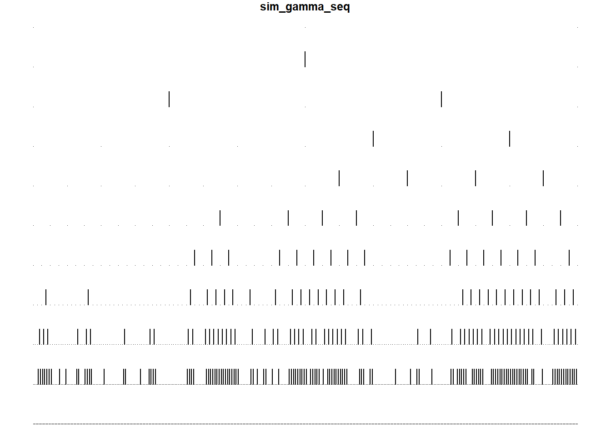
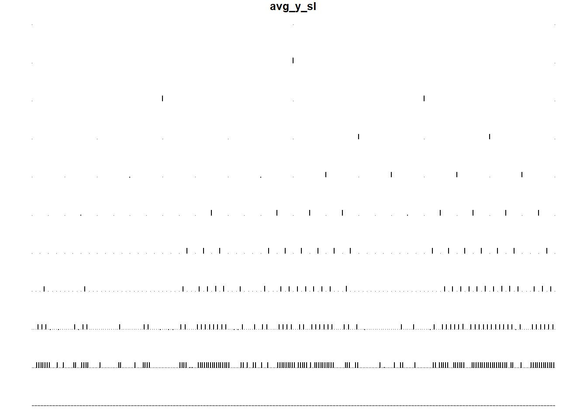
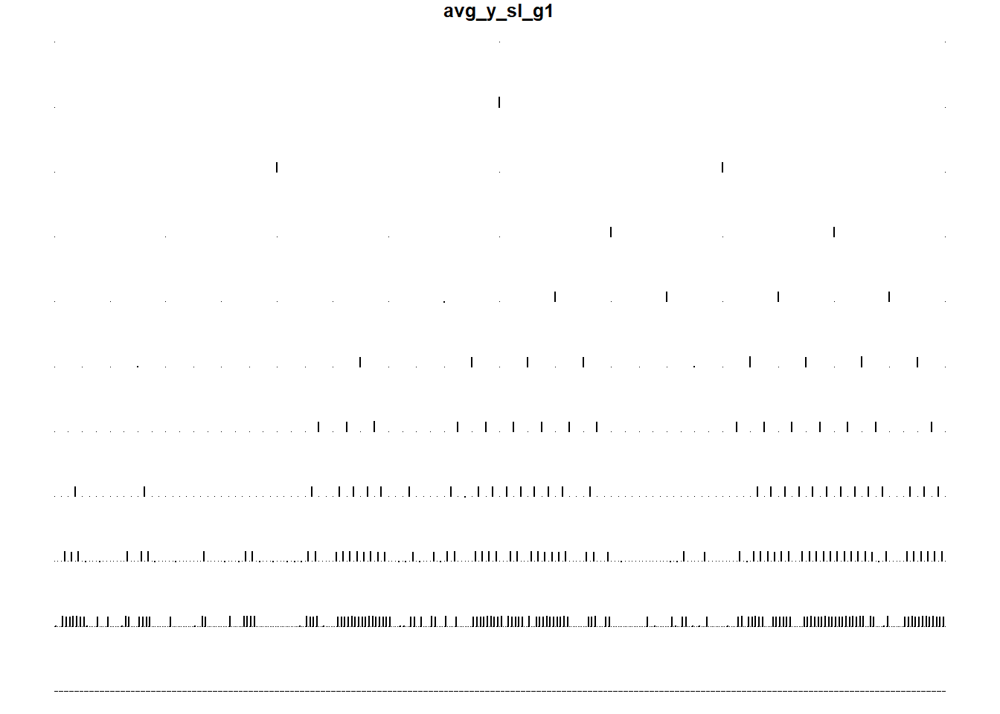

The mission here is to pick some parameters, use it to simulate WaveQTL data, run it through the algorithm, and see if we can recover the original parameters. This is to test the algorithm’s accuracy, and help identify any potential bugs should it fail to recover the original parameters. We consider two situations here:
The process is as follows:
n_ind = 70
n_pheno = 1024
tying_grp <- c(1,2,3,5,9,17,33,65,129,257,513)
# Set some strong signals at top of tree
# (ie a param_pi_11 of 1 means there is a very strong chance
# of difference between the two halves of data)
param_pi_00 <- 0 # 0.8
param_pi_11 <- 1 # 0.5
# Round to nearest 100th, for simplicity
num_tying_grps <- length(tying_grp)
# Epsilon elements are for elements 3 -> 1024 (= 2 -> 1023 of tree)
# Generate 1024 elements as per the above tying_grp description,
# then just cut out the first two levels of elements (as neither the
# scaling coefficient or head of tree need epsilons)
# Current attempt:
# - Fairly strong signals prevail
# - Fairly weak signals remain weak
# g_{p(sl)}
# 1 | 0 |
# g_{sl} 1| 0.9 | 0.1 |
# 0| 0.1 | 0.9 |
# But at last level, very little signal, so most go to 0:
# g_{p(sl)}
# 1 | 0 |
# g_{sl} 1| 0 | 0 |
# 0| 1 | 1 |
# Eps_11 (elements 2 -> 1023 of tree)
# # Random numbers
# grped_eps_11 <- round(runif(n=num_tying_grps)*100)/100
grped_eps_11 <- c(rep(0.9,(num_tying_grps-1)),0)
param_eps_11 <- numeric()
for(i in 1:(num_tying_grps - 1)){
indx_start <- tying_grp[i]
indx_end <- tying_grp[i+1]
param_eps_11[indx_start:indx_end] <- grped_eps_11[i]
}
param_eps_11[tying_grp[num_tying_grps]:n_pheno] <- grped_eps_11[num_tying_grps]
param_eps_11 <- param_eps_11[-(1:2)]
# Eps_10 (elements 2 -> 1023 of tree)
# # Random numbers
# grped_eps_10 <- round(runif(n=num_tying_grps)*100)/100
grped_eps_10 <- c(rep(0.1,(num_tying_grps-1)),0)
param_eps_10 <- numeric()
for(i in 1:(num_tying_grps - 1)){
indx_start <- tying_grp[i]
indx_end <- tying_grp[i+1]
param_eps_10[indx_start:indx_end] <- grped_eps_10[i]
}
param_eps_10[tying_grp[num_tying_grps]:n_pheno] <- grped_eps_10[num_tying_grps]
param_eps_10 <- param_eps_10[-(1:2)]
coeff_mu <- 0
coeff_beta <- 10
param_gi_prob <- 0.4
param_sigma_beta <- 0.5First, create our \(\gamma\) sequence:
gamma_seq <- numeric()
rand_seq <- runif(n_pheno)
# Scaling coefficient
gamma_seq[1] <- ifelse(rand_seq[1] < param_pi_00, 1, 0)
# Head of tree
gamma_seq[2] <- ifelse(rand_seq[2] < param_pi_11, 1, 0)
# i is the index of tree, where i = 1 is the head of the tree
# Using this notation because that's how 'get_parent_indices' has been written
for(i in 2:1023){
indx <- i
parent_indx <- get_parent_indices(indx)
parent_gamma <- gamma_seq[parent_indx + 1]
if(parent_gamma == 1){
sl_prob <- param_eps_11[indx - 1]
}else if(parent_gamma == 0){
sl_prob <- param_eps_10[indx - 1]
}
gamma_seq[i+1] <- ifelse(rand_seq[i+1] < sl_prob, 1, 0)
}
plot_gamma_sim <- tree_plot(gamma_seq,plot_title = "sim_gamma_seq")
Then we can use this to generate our \(\beta,\mu,\epsilon_{s,l}^i\)
beta_seq <- rep(0,n_pheno)
beta_seq[which(gamma_seq == 1)] <- coeff_beta
mu_seq <- rep(0,n_pheno)
mu_seq[which(gamma_seq == 1)] <- coeff_mu
mu_mtx <- matrix(rep(mu_seq,70),nrow = n_ind,ncol = n_pheno,byrow = T)
eps_seq <- rnorm(n_pheno*n_ind,mean = 0,sd = sqrt(param_sigma_beta))
eps_mtx <- matrix(eps_seq,nrow = n_ind,ncol = n_pheno,byrow = T)
plot_beta_sim <- tree_plot(beta_seq,plot_title = "sim_beta_seq")plot_mu_sim <- tree_plot(mu_seq,plot_title = "sim_mu_seq")graphics.off()
hist(eps_seq)And finally, use a binomial distirbution to generate a sequence of \(g\), and put this together to create the \(\beta\) matrix:
g_seq <- rbinom(n_ind,size = 2,prob = param_gi_prob)
cat(c("sim2","A","A",g_seq), file = paste0("~/Cpp/WaveQTL_HMT/data/dsQTL/sim2.cis.geno"))
beta_mtx <- g_seq %*% t(beta_seq)And, the \(y\) matrix:
y_mtx <- mu_mtx + beta_mtx + eps_mtx
write.table(y_mtx, file= paste0("~/Cpp/WaveQTL_HMT/test/dsQTL/sim2_WCs.txt"), row.names=FALSE, col.names = FALSE, quote=FALSE)
cat(rep(1,1024), file = paste0("~/Cpp/WaveQTL_HMT/test/dsQTL/use_all.txt"))Here are some diagnostics regarding average beta’s and average y’s at each scale-location:
beta_avg <- apply(beta_mtx,MARGIN = 2,FUN = mean)
y_avg <- apply(y_mtx,MARGIN = 2,FUN = mean)
plot_beta_avg <- tree_plot(beta_avg,yaxis_lims = c(min(beta_avg),max(beta_avg)),plot_title = "avg_beta_sl")plot_y_avg <- tree_plot(y_avg,yaxis_lims = c(min(y_mtx),max(y_mtx)),plot_title = "avg_y_sl")
# By covariate:
y_mtx_w_group <- cbind(y_mtx,g_seq)
y_mtx_means_g0 <- apply(y_mtx[g_seq == 0,],2,mean)
y_mtx_means_g1 <- apply(y_mtx[g_seq == 1,],2,mean)
y_mtx_means_g2 <- apply(y_mtx[g_seq == 2,],2,mean)
plot_y_avg_g0 <- tree_plot(y_mtx_means_g0,yaxis_lims = c(min(y_mtx),max(y_mtx)),plot_title = "avg_y_sl_g0")plot_y_avg_g1 <- tree_plot(y_mtx_means_g1,yaxis_lims = c(min(y_mtx),max(y_mtx)),plot_title = "avg_y_sl_g1")
plot_y_avg_g2 <- tree_plot(y_mtx_means_g2,yaxis_lims = c(min(y_mtx),max(y_mtx)),plot_title = "avg_y_sl_g2")Now, run it through WaveQTL_HMT, then grab the parameters. (Not run) Note that: # I DON’T ACTUALLY HAVE A WAY OF RECOVERING PI_0 ATM UNLESS I RUN IT THROUGH WAVEQTL (NO HMT) ALSO!
The above was just an illustration of how a simulation method. Here, we clear the environment, and we can re-run the process many times many times, in a loop, and continue to collect resulting observations. See (INSERT MARKDOWN DOCO HERE) for my many attempts to do a useful simulation.